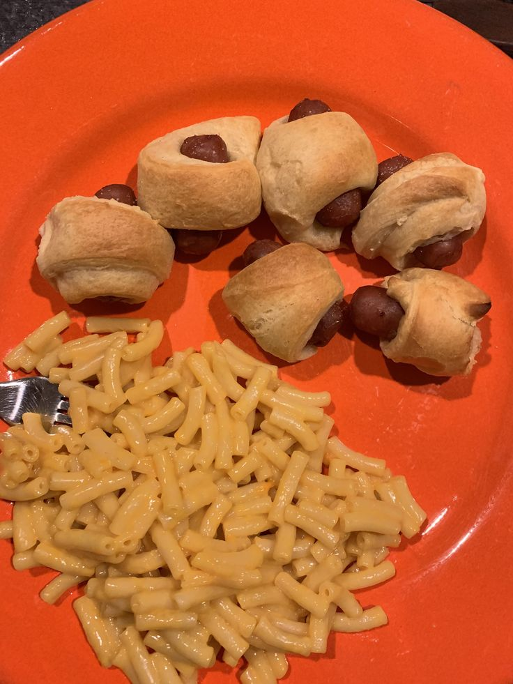

Trash Dinner

Description
The gut-twisting, bowel-disrupting, blood sugar-upsetting dinner of your dreams.
Ingredients
Kraft Macaroni and Cheese
- Kraft Macaroni and Cheese box dinner
- 1/4 cup 2% milk
- 4 tbsp butter
Mini Crescent Dogs
- One can of Pillsbury crescent rolls
- One pack of cocktail weenies
- Optional: Several slices of cheese
Steps (Mini Crescent Dogs)
- Preheat oven to 375°F.
- Prepare a plate to set your crescent roll pieces on.
- Prepare a baking sheet. There is no need to grease, but it also doesn't hurt anything if you do.
- Peel back label on can of crescent rolls and burst as indicated on packaging. Discard canister.
- Unroll and break apart into discrete triangles of bread goo.
- Cut each triangle into at least three other triangles. Figure out the best way to do this on a piece-to-piece basis, preferring long triangles wherever possible.
- Open your pack of weenies (sausage, hot dog, whatever you prefer) and drain it of gross preservative goo. Dry off weenies in a paper towel for easier handling. The crescent rolls will adhere more easily to less-slimey weenies.
- One after another, take a sliced triangle of crescent roll in your dominant hand, and a weenie in the other, and wrap the latter in the former. Like a pig in some sort of blanket.
- As you wrap your weenies, deposit them evenly across the baking sheet until there are no more.
- Place the baking sheet in the oven for 12-15 minutes. I happen to think they're perfect right at 12 minutes, but you might like a little more color to yours.
Steps (Kraft Macaroni and Cheese)
- Boil about six cups of water
- Once boiling, add in noodles. Stir occasionally to keep them broken up and from adhering to the bottom of the pot where they will burn.
- After 7 and 1/2 minutes, drain the pot of water.
- Tear open the included cheese-flavored powder packet and empty over noodles.
- Add 1/4 cup milk.
- Add 4 tbsp butter.
- Stir until it all comes together and looks like the picture on the front of the box.